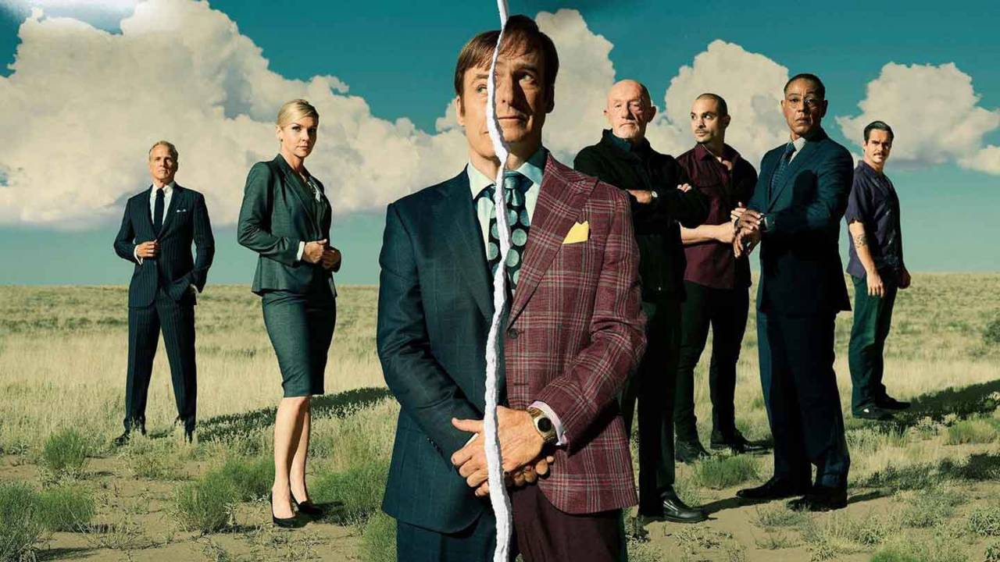

Merhabalar, ben Berke Terzi. İstanbul Kültür Üniversitesi Matematik ve Bilgisayar Bilimleri 3.sınıf öğrencisiyim.
C# ve javascript ile ilgileniyorum. Ve kendime daha fazlasını katmak için Html derseleri almaya başladım.
Better Call Saul, AMC'de gösterilen Amerikan suç/drama dizisidir. Vince Gilligan ve Peter Gould tarafından yaratılan dizi, daha önce Gilligan tarafından yaratılan Breaking Bad'in devamı niteliğindedir ve öncesindeki olayları ekrana taşımaktadır.
